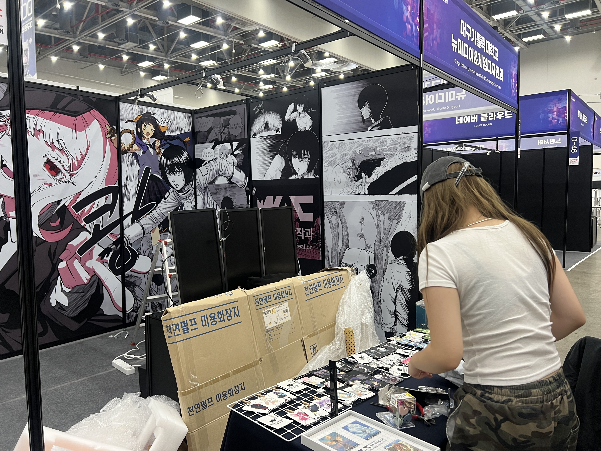
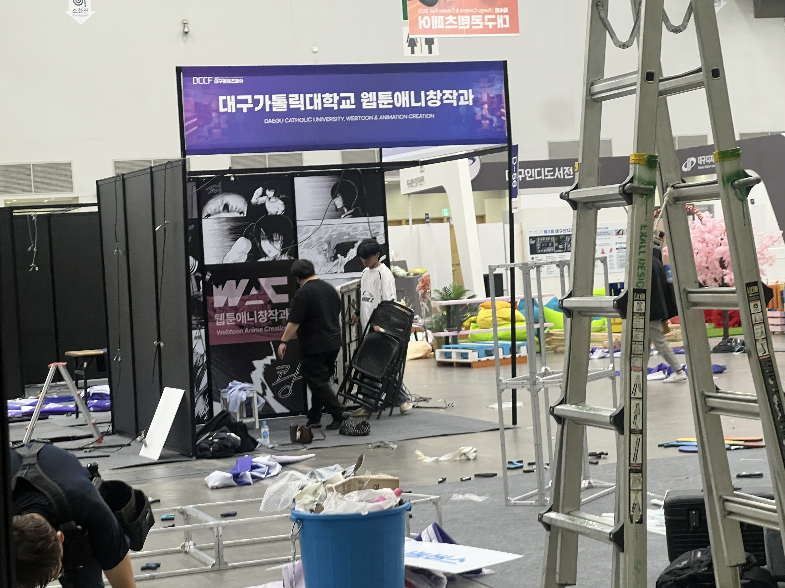
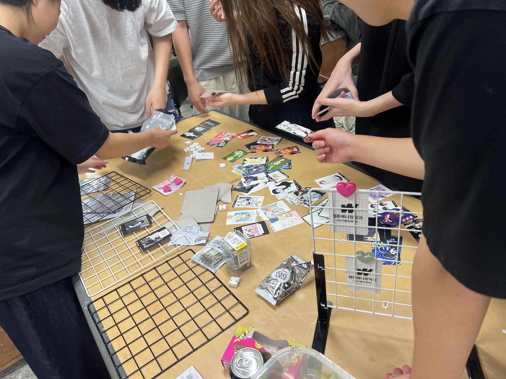
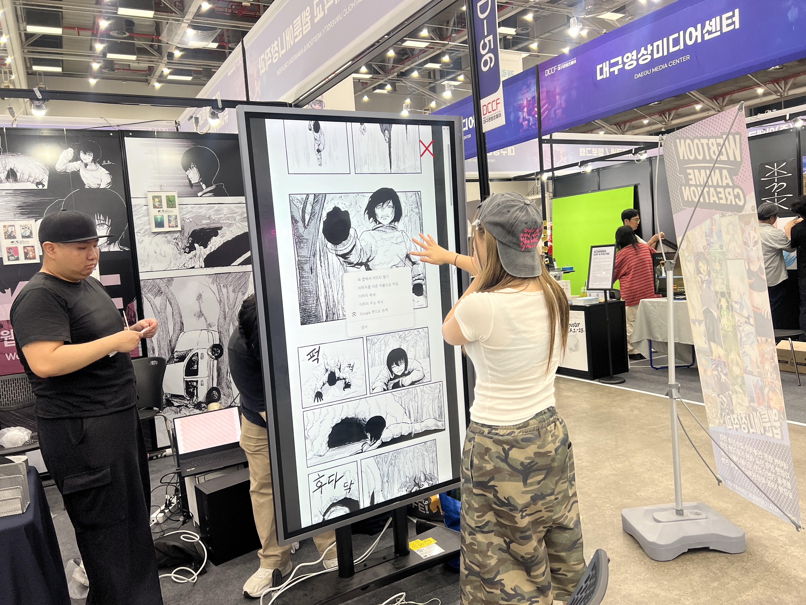
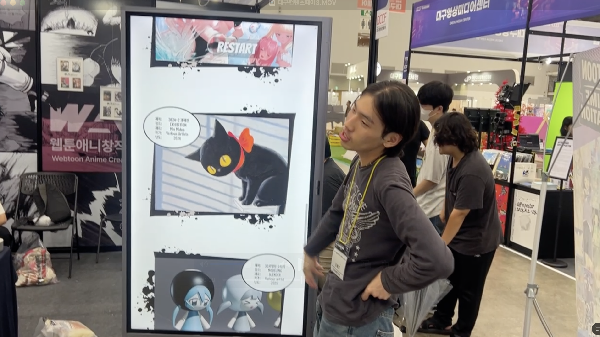

LIMITED
RESOURCES.
학과를 홍보하는 전시 부스를 기획해야 했지만, 타 학과와의 협업 계획이 무산되고 예산도 충분하지 않은 상황이었습니다.
전시에 바로 활용할 수 있는 작업물 또한 부족해, 기존 학생 작업과 학교가 보유한 장비를 활용해 전시 콘텐츠 자체를 다시 구성하는 방향을 선택했습니다.
02 / EXHIBITION PLANNING
제한된 자원으로
학과를 어떻게 보여줄 것인가?

01 / CONTEXT
학과를 홍보하는 전시 부스를 기획해야 했지만, 타 학과와의 협업 계획이 무산되고 예산도 충분하지 않은 상황이었습니다.
전시에 바로 활용할 수 있는 작업물 또한 부족해, 기존 학생 작업과 학교가 보유한 장비를 활용해 전시 콘텐츠 자체를 다시 구성하는 방향을 선택했습니다.
02 / STRATEGY
03 / EXECUTION
벽면에는 시트지 그래픽을 적용해 부스 전체의 통일성과 원거리에서의 시인성을 확보했습니다.
학생들의 캐릭터 작업은 카드 형식으로 재디자인하여 물리적으로 감상할 수 있는 전시물로 제작했습니다.
웹툰 작업은 학교가 보유한 대형 터치스크린과 HTML을 활용해 관람객이 직접 스크롤하며 감상할 수 있도록 구성했습니다.



01 / WALL GRAPHIC
학생들의 웹툰과 캐릭터 이미지를 활용한 대형 벽면 그래픽을 통해 멀리서도 부스의 존재감과 학과의 성격을 인식할 수 있도록 구성했습니다.

02 / CHARACTER CARDS
학생들의 디지털 캐릭터 작업을 수합하고 카드 형태로 재구성했습니다. 화면 속 작업을 실제로 가까이에서 보고 만질 수 있는 전시물로 변환했습니다.
04 / EXPERIENCE
관람객은 대형 터치스크린을 직접 조작하며 학생들의 웹툰 작업을 감상했습니다.
작품을 단순히 바라보는 방식에서 벗어나, 관람객이 직접 탐색할 수 있는 참여형 전시 경험을 구성했습니다.

Visitors interacting with the touchscreen interface.
TOUCHSCREEN INTERFACE
HTML / INTERACTIVE DISPLAY
Students' webtoon works could be explored vertically through a large touchscreen display.

05 / RESULT
현장에서 관람객이 직접 터치스크린을 조작하고 카드 작업을 살펴보는 상호작용이 이루어졌습니다.
제작한 HTML 구조는 이후 콘텐츠만 교체하는 방식으로 학과 과제전과 졸업전시에서도 계속 활용되었습니다.
일회성 전시 결과물을 넘어, 이후 전시에서도 활용할 수 있는 디지털 전시 시스템으로 이어졌습니다.
NEXT PROJECT
GYEONGSAN COMIC FESTIVAL →